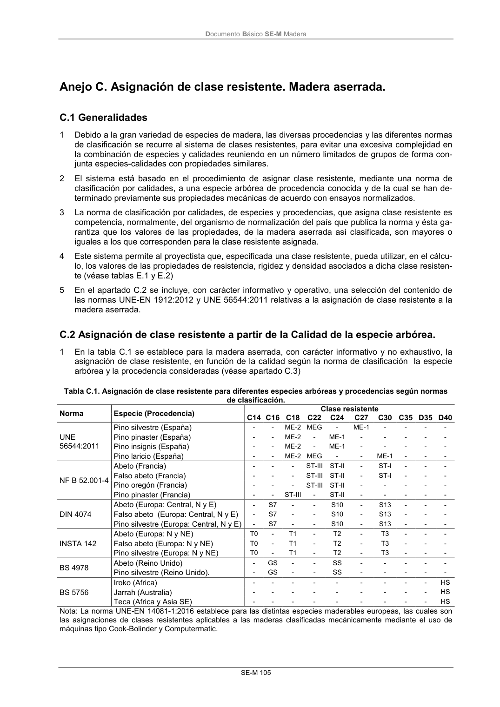

DB-SE-M Madera · edición 2019-12-20 · capa oficial
Documento DB-SE-M-oficial · SHA-256 del PDF 26b5819839ebfda78b0b119c5e76a0a37773b0d763c05688541870075df93718
Copia fiel del PDF fuente · Fuente oficial
Ficha de la disposición en la fuente oficial
Formatos: JSON del segmento · Markdown
C.2 Asignación de clase resistente a partir de la Calidad de la especie arbórea. 1 En la tabla C.1 se establece para la madera aserrada, con carácter informativo y no exhaustivo, la asignación de clase resistente, en función de la calidad según la norma de clasificación la especie arbórea y la procedencia consideradas (véase apartado C.3) Tabla C.1. Asignación de clase resistente para diferentes especies arbóreas y procedencias según normas de clasificación. Norma Especie (Procedencia) Clase resistente C14C16 C18 C22 C24 C27 C30 C35D35D40 UNE 56544:2011 Pino silvestre (España) - - ME-2 MEG - ME-1 - - - - Pino pinaster (España) - - ME-2 - ME-1 - - - - - Pino insignis (España) - - ME-2 - ME-1 - - - - - Pino laricio (España) - - ME-2 MEG - - ME-1 - - - NF B 52.001-4 Abeto (Francia) - - - ST-III ST-II - ST-I - - - Falso abeto (Francia) - - - ST-III ST-II - ST-I - - - Pino oregón (Francia) - - - ST-III ST-II - - - - - Pino pinaster (Francia) - - ST-III - ST-II - - - - - DIN 4074 Abeto (Europa: Central, N y E) - S7 - - S10 - S13 - - - Falso abeto (Europa: Central, N y E) - S7 - - S10 - S13 - - - Pino silvestre (Europa: Central, N y E) - S7 - - S10 - S13 - - - INSTA 142 Abeto (Europa: N y NE) T0 - T1 - T2 - T3 - - - Falso abeto (Europa: N y NE) T0 - T1 - T2 - T3 - - - Pino silvestre (Europa: N y NE) T0 - T1 - T2 - T3 - - - BS 4978 Abeto (Reino Unido) - GS - - SS - - - - - Pino silvestre (Reino Unido). - GS - - SS - - - - - BS 5756 Iroko (Africa) - - - - - - - - - HS Jarrah (Australia) - - - - - - - - - HS Teca (Africa y Asia SE) - - - - - - - - - HS Nota: La norma UNE-EN 14081-1:2016 establece para las distintas especies maderables europeas, las cuales son las asignaciones de clases resistentes aplicables a las maderas clasificadas mecánicamente mediante el uso de máquinas tipo Cook-Bolinder y Computermatic. DocumentoBásico SE-M Madera SE-M 106
